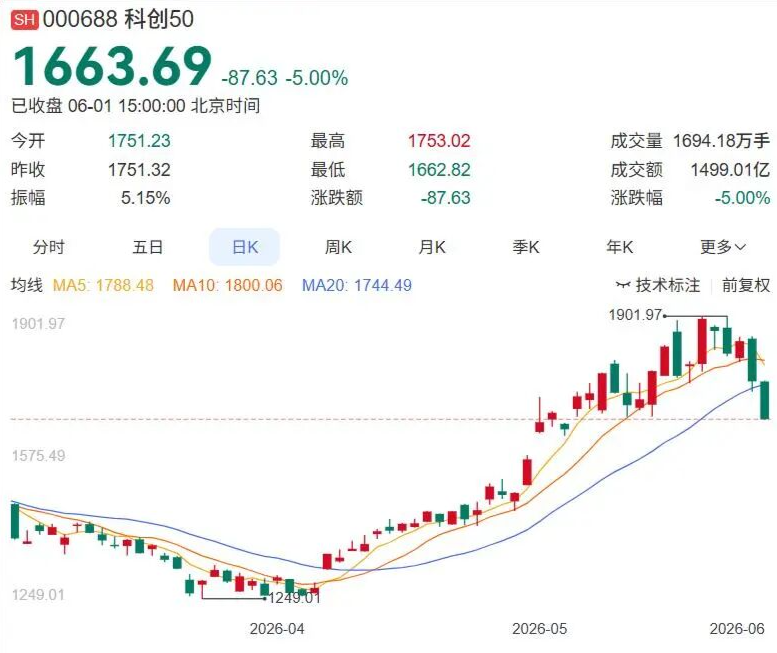
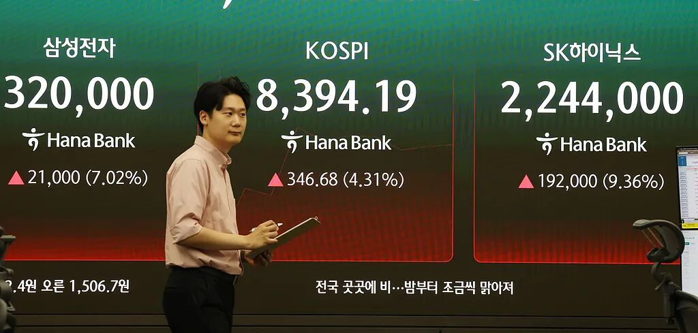
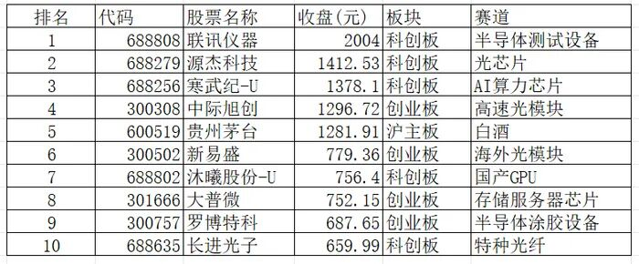
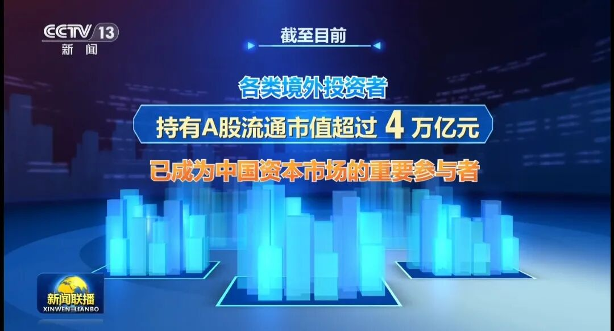

📈 遍地翻倍牛股，股民们最彷徨的时候到了？
Doubling Stocks Everywhere But Investors Have Never Been More Confused


翻倍牛股接二连三，股民却愣在原地，遍地找不到可安心买入买的资产asset[ˈæset] n. 资产
文 /巴九灵（微信公众号：吴晓波频道）
A股股民的烦恼，可以总结summarize[ˈsʌməraɪz] v. 总结、概括为五件事。
重仓科技的，担心worry[ˈwɜri] v. 担心、担忧科技股砸盘；
没买科技的，怕自己高位peak[piːk] n. 高位、最高点接盘；
抄底了消费consumption[kənˈsʌmpʃən] n. 消费，结果越跌越便宜；
想埋伏ambush[ˈæmbʊʃ] v. 埋伏、提前布局“老登”，又怕便宜没好货；
美股一路新高，A股越来越跌宕起伏fluctuation[ˌflʌktʃuˈeɪʃən] n. 起伏、波动。
：科技technology[tekˈnɒlədʒi] n. 科技、技术股，现在该买还是该卖？
在科技股上赚钱earn[ɜːrn] v. 赚钱、挣得变难了？
过去一个月，A股“只剩下”一条主线theme[θiːm] n. 主线、主题。
5月，31个申万一级行业里有26个行业下跌，通信和电子两个行业双双大涨了近20%，也充分印证verify[ˈverɪfaɪ] v. 印证、证实了什么叫人的悲欢并不相通：除了重仓科技的，大部分人上个月都没赚钱。
市场一度弥漫permeate[ˈpɜːrmieɪt] v. 弥漫、充满着一股AI狂热，只要跟AI沾上边，再八竿子打不着的股票都能飞上风口。比如，一家主业做瓷砖的地产链企业，靠“AI+半导体陶瓷基板”的概念concept[ˈkɒnsept] n. 概念，收获了6个涨停板；另一家做家装的企业enterprise[ˈentərpraɪz] n. 企业，靠“数据中心”概念收获15天11板。
但进入6月，风向trend[trend] n. 风向、趋势开始改变。
在科技股上赚钱的难度difficulty[ˈdɪfɪkəlti] n. 难度、困难直线上升。五月底、六月初，科创50指数连续consecutive[kənˈsekjətɪv] adj. 连续的两个交易日大跌5%，重仓的股民短短两天就亏掉了一个跌停板。出逃flee[fliː] v. 出逃、逃离的资金涌进“老登股”，煤炭板块大涨5%，电力、白酒、地产、传媒等已经跌到无人问津的板块反倒是迎来了久违的大涨。

这种行情在A股被形象地vividly[ˈvɪvɪdli] adv. 形象地、生动地称为“高切低”，即资金从涨幅较大的热门板块撤出来，转向那些长期低迷的便宜板块。它未必意味着这一波行情的结束，但往往意味着市场开始重新审视scrutinize[ˈskruːtənaɪz] v. 审视、仔细检查风险和收益的关系。
另外，拥挤度指标indicator[ˈɪndɪkeɪtər] n. 指标也开始提示过热风险。
到今天为止，A股大盘拥挤度达到achieve[əˈtʃiːv] v. 达到、实现了49%，也就是全市场成交额排名前5%的约270只股票吸走了全市场近一半的资金。
在A股历史上，类似情形circumstance[ˈsɜːrkəmstæns] n. 情形、情况出现过5次，其中有2次市场发生了风格切换，另外3次出现了牛转熊。
各种消息也开始冲击impact[ˈɪmpækt] n. 冲击、影响大家的信心，其中最刺激心态的是大资金减持。
过去两个月，数百家科技企业被大股东shareholder[ˈʃerhoʊldər] n. 股东减持。有的减持新闻引起了争议controversy[ˈkɑːntrəvɜːrsi] n. 争议、争论，比如一家机器人板块龙头公司，上个月被董事长和多名高管减持，其中董事长本人大举减持了4.2亿元，理由是用于子女教育和生活需求。在很多投资者看来，这不仅是高位套现，还很不真诚sincere[sɪnˈsɪr] adj. 真诚的、诚恳的，刺伤了股民的信任，很快引发了股价连日下跌。
总的来说，虽然大资金退出和股价高位没有必然联系，但减持潮确实历来被视作一个并不温馨warm[wɔːrm] adj. 温馨的、温暖的的温馨提示。

而且，与高歌猛进的海外股市相比，从基本面看，人们开始担心部分科技股估值valuation[ˌvæljuˈeɪʃən] n. 估值、估价偏高。
从财务分析看，股票并不是涨得越多，泡沫bubble[ˈbʌbəl] n. 泡沫越大。衡量evaluate[ɪˈvæljueɪt] v. 衡量、评估一家公司的股价贵不贵，不能只看它涨了多少，更要看它的盈利能力能否支撑涨幅。
一个较常用的衡量指标是市盈率，计算calculate[ˈkælkjuleɪt] v. 计算方式是公司股价除以利润水平。简单simple[ˈsɪmpəl] adj. 简单的而言，市盈率越高，越被高估；反之conversely[ˈkɑːnvɜːrsli] adv. 反之、相反地则是被低估。
比如，纳斯达克指数2024年底到现在涨了40%，但市盈率一直稳定stable[ˈsteɪbəl] adj. 稳定的在33倍左右，因为科技公司们的盈利能力同样在快速增长。
再比如，三星的股价今年以来已经涨了将近200%，但公司一季度的净利润暴涨surge[sɜːrdʒ] v. 暴涨、激增了近500%。有机构基于三星未来的盈利预期forecast[ˈfɔːrkæst] n. 预期、预测测算了市盈率，不到6倍。所以金融机构们依然在疯狂地上调这家公司的目标价，股民们则调侃tease[tiːz] v. 调侃、开玩笑“越涨越便宜”。

5月27日，韩国股市开盘创下历史history[ˈhɪstəri] n. 历史新高
从这个角度perspective[pərˈspektɪv] n. 角度、视角来评估A股市场上的一些科技股，就显得有些贵了。目前科创50指数市盈率已经达到了166倍左右，中证半导体指数的市盈率中位数median[ˈmiːdiən] n. 中位数达到了181倍左右。最主要的原因就是，虽行业整体经营业绩在持续sustain[səˈsteɪn] v. 持续、维持改善，但没能跟上股价飙涨的速度。
种种因素factor[ˈfæktər] n. 因素下，科技股也就让人越来越买不下手了。但另一个尴尬awkward[ˈɔːkwərd] adj. 尴尬的的事实是，“便宜”的其他股，也一样买不下手。
比如，昔日的股王茅台，如今最大的存在感是沦为AI牛股的参照系，从股价到市值都被不断超越surpass[sərˈpæs] v. 超越、超过。目前茅台的股价跌至1280元，已经掉到A股第五，被联讯仪器、源杰科技、寒武纪、中际旭创四只诞生emerge[iˈmɜːrdʒ] v. 诞生、出现于本轮牛市的科技股甩在身后。

“优等生”茅台都如此，其他的恐怕更难脱颖excel[ɪkˈsel] v. 脱颖而出、表现优异而出。
虽然一大批非AI资产已经显得非常便宜，是大家心照不宣的事实，但真的要“别人恐惧我贪婪greedy[ˈɡriːdi] adj. 贪婪的”，似乎也不容易。
这个过程中，甚至出现了一个荒诞absurd[əbˈsɜːrd] adj. 荒诞的、荒谬的却又很合情境的谣言：一批管理着消费主题基金的基金经理为了获取更好的业绩回报，开始暗中重仓科技，形成所谓的风格漂移。而到了6月初，网传这批基金经理为了避监管风头，把资金紧急urgent[ˈɜːrdʒənt] adj. 紧急的转回“老登股”，就此带崩了科技股。
最终带崩的逻辑logic[ˈlɒdʒɪk] n. 逻辑被证伪，但情绪并没有被完全压制：翻倍牛股接二连三，股民却愣在原地，遍地找不到可安心买入的资产。
不过，虽然担忧的叙事narrative[ˈnærətɪv] n. 叙事、叙述暂时稍占上风，但看好的声音依然很多。
其中一个信号signal[ˈsɪɡnəl] n. 信号，是就在昨天晚上，A股登上了新闻联播。据其报道，外资正在积极active[ˈæktɪv] adj. 积极的、活跃的加码中国股市，境外投资者已持有A股流通市值4万亿元，成为中国资本市场的重要参与者。
值得一提的是，这也是继2024年9月30日之后，A股再次登上新闻联播，彼时，是本轮牛市的起点origin[ˈɔːrɪdʒɪn] n. 起点、起源。

此外，我们咨询consult[kənˈsʌlt] v. 咨询、请教的多位专家也一致认为，短期分歧不会改变这轮科技牛市的长期趋势。
财经评论员刘晓博提到，历史上，一轮超级行情出现趋势性掉头，往往需要有多重先兆precursor[priːˈkɜːrsər] n. 先兆、前兆和信号，至少有估值极端分化、成交拥挤度爆表、资金结构拐点、宏观或监管政策催化、抱团松动这五类信号共振，不会仅凭单一信号就切换。
从这些维度dimension[daɪˈmenʃən] n. 维度、方面来看，牛市的基本面并没有出现变化。
另一方面，盈添财富创始人赵启欣提到，市场整体并没有出现明显的估值泡沫，而是结构性structural[ˈstrʌktʃərəl] adj. 结构性的的冷热不均。因此，下半年会出现两个趋势：一是各板块之间更加均衡equilibrium[ˌiːkwɪˈlɪbriəm] n. 均衡、平衡，二是科技股缩圈，持续上涨越来越依靠业绩支撑。
对于投资者当前阶段的困惑confusion[kənˈfjuːʒən] n. 困惑、迷茫，我们也咨询了4位理财专家的看法，一起来看看吧~
■ 吴晓波频道首席财富顾问

如果科技牛市到顶了，那么整个entire[ɪnˈtaɪər] adj. 整个的、全部的市场也就快完了。现在的情况其实是科技板块之前已经分化到了极致extreme[ɪkˈstriːm] n. 极致、极端，从最初的科技与非科技分化，变成了现在的AI与非AI的区别，风格特别集中且撕裂。
因此，肯定会有阶段性的反扑或风格转换transition[trænˈzɪʃən] n. 转换、转变。但从中长期来看，芯片、科技以及AI这一波在经历一定的调整adjustment[əˈdʒʌstmənt] n. 调整后，后面科技依然会占据主线位置。
传统traditional[trəˈdɪʃənəl] adj. 传统的板块的牛市可能还没开始，而科技板块已进入中场阶段，单靠拉估值推动的行情接近尾声，后续上涨需要业绩的支撑。
短期风险risk[rɪsk] n. 风险较大的，其实是前期涨幅过大的板块。这有点像去年12月的商业航天或去年3月的人形机器人板块，市场后续表现performance[pərˈfɔːrməns] n. 表现、性能可能不错，但在未来三个月或半年内，前面特别热的板块可能需要休息一段时间。
老登板块里，一方面是增长growth[ɡroʊθ] n. 增长性不错且估值便宜的，比如券商，从投资安全性上没问题。
另一类是所谓的景气prosperity[prɑːˈsperəti] n. 景气、繁荣反转型，比如创新药、锂电。锂电这样景气反转后迎来新周期cycle[ˈsaɪkəl] n. 周期的板块，可能比上一个周期更厉害。下半年光伏也可能看到基本面的拐点inflection[ɪnˈflekʃən] n. 拐点、转折点。
房地产和白酒，我个人倾向于都是战术tactical[ˈtæktɪkəl] adj. 战术的型机会，不是战略型机会。房地产今年很难看到拐点，虽然最差的时候可能过去了，但这个行业很难回到高歌猛进的状态status[ˈsteɪtəs] n. 状态、状况，淘金难度很大，我们不建议。
白酒属于晚周期品种variety[vəˈraɪəti] n. 品种、类别。这意味imply[ɪmˈplaɪ] v. 意味、暗示着其他行业景气拐点都见到之后，才可能见到白酒的景气拐点。所以从反转角度，白酒应该在其他行业后面，如果是长期价值投资者觉得价格合适suitable[ˈsuːtəbəl] adj. 合适的买点问题不大，但不要重仓。
科技股方面，如果之前在科技上配置不足，我建议recommend[ˌrekəˈmend] v. 建议、推荐分批去买，大跌大买，小跌少买，不要一次性买入。如果本身科技配置就比较多，建议规律性兑现利润profit[ˈprɒfɪt] n. 利润。
我们一直强调emphasize[ˈemfəsaɪz] v. 强调相对均衡的配置，要拥抱科技，也要尊重老登。贪covet[ˈkʌvət] v. 贪图、觊觎便宜全买老登资产不对；老登一个不买全买科创，这两天就是挨揍suffer[ˈsʌfər] v. 遭受、忍受的时候。前面想调整时它天天涨不敢下手，现在给机会了又害怕fear[fɪr] v. 害怕、恐惧，那到底想怎样？每一次风格切换都是重新把配置调整合理rational[ˈræʃənəl] adj. 合理的、理性的的机会。
公众号“刘晓博说财经”

这轮高低切是由多个因素造成的，一是之前科技赛道的确涨幅过多，获利筹码太丰厚generous[ˈdʒenərəs] adj. 丰厚的、大量的；二是监管regulate[ˈreɡjuleɪt] v. 监管、管理整治基金风格漂移，6月初和6月底都是重要的时间节点，的确有一批基金需要调仓；即将到来的世界杯和几个超级IPO，也对投资者带来了负面negative[ˈneɡətɪv] adj. 负面的、消极的的心理暗示。
从历史经验experience[ɪkˈspɪriəns] n. 经验看，世界杯期间A股的下跌概率是2/3，美股一半对一半，欧洲股市则是涨多跌少。所以在国际市场上世界杯魔咒现象phenomenon[fɪˈnɒmɪnən] n. 现象并不明显。
科技主线mainstay[ˈmeɪnsteɪ] n. 主线、支柱的行情还没有结束。主要原因是接下来要进入中报季，真正在今年上半年出现业绩大幅增长的主要还是科技赛道，尤其particularly[pərˈtɪkjələrli] adv. 尤其、特别是是半导体相关的产业。
接下来，科技股将接受中报的检验inspect[ɪnˈspekt] v. 检验、检查。业绩大幅提升enhance[ɪnˈhæns] v. 提升、提高的个股会继续走强，缺少业绩支撑的个股则会继续下跌。半导体芯片产业的行业牛市仍在持续，还继续向上游产业链扩散diffuse[dɪˈfjuːs] v. 扩散、传播，外围市场的牛市短期内不会结束，这会支撑 A 股的科技股再走一段。
能源领域domain[doʊˈmeɪn] n. 领域、范围上半年业绩也不错，所以煤炭和油气板块的行情可能会持续一段。电力、煤炭、算力金属、算力化工，这些板块后市有一定机会opportunity[ˌɒpərˈtuːnəti] n. 机会。其他的传统板块很难持续，还需要等待await[əˈweɪt] v. 等待、等候时机。
对于投资者investor[ɪnˈvestər] n. 投资者来说，6月行情的机会很难抓。不建议满仓，不建议All In任何一个赛道sector[ˈsektər] n. 赛道、领域。如果科技仓位position[pəˈzɪʃən] n. 仓位、持仓比较轻，可以在比较看好的赛道上逢低补仓。否则建议观望hesitate[ˈhezɪteɪt] v. 观望、犹豫。
■ 前海开源基金首席经济学家

近期前5%的股票成交量占全市场成交量的近50%，从历史看，当赛道交易集中度过高时，大概率会伴随accompany[əˈkʌmpəni] v. 伴随、跟随较大调整。
例如2021年对新能源以及白酒等消费板块的投资，都出现过交易集中度超过45%的情况，随后均出现较大幅度magnitude[ˈmæɡnɪtuːd] n. 幅度、程度调整。
过去一段时间A股呈现出美股化的特征characteristic[ˌkɛrəktəˈrɪstɪk] n. 特征、特点，美股交易集中度更为集中，前5%股票的交易占比甚至超过60%。
本轮AI科技革命revolution[ˌrevəˈluːʃən] n. 革命始于美股，投资者可以每天早上关注隔夜美股，若隔夜纳指安好，便是晴天；若隔夜纳指暴跌，则可能是泡沫破裂迹象indication[ˌɪndɪˈkeɪʃən] n. 迹象、征兆，开盘时可选择调整仓位。目前美股科技股依然强势，因此本次调整不能视为deem[diːm] v. 视为、认为AI科技行情走完的标志，而是短期过快上涨后的修正。
从去年年初，我就提出本轮行情应重点关注六大赛道，经过一年半时间已得到较好验证validate[ˈvælɪdeɪt] v. 验证、证实，六大赛道轮番上涨，包括芯片半导体、算力算法基础设施、人形机器人、商业航天、固态电池、生物医药。后续仍可继续关注focus[ˈfoʊkəs] v. 关注、聚焦这六大赛道。
■ 渐近投资研究院院长

科技股虽然估值已经偏贵，但盈利周期还在上行趋势中，还有进一步泡沫化的空间space[speɪs] n. 空间。重仓者可以适当moderate[ˈmɑːdərət] adj. 适当的、适度的降仓位。低位板块确实很便宜，但宏观基本面偏弱的背景context[ˈkɑːntekst] n. 背景、语境下依然缺少催化剂。
*以上建议仅供参考，股市有风险，决策需谨慎cautious[ˈkɔːʃəs] adj. 谨慎的。

责任编辑